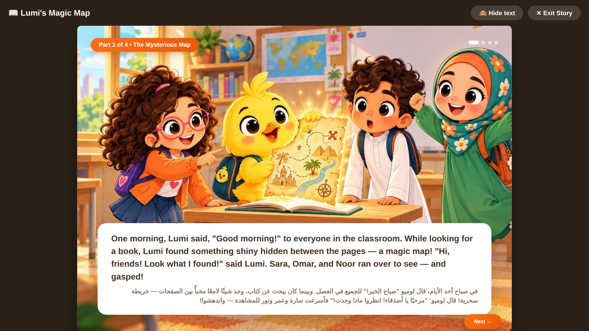

تعرّفوا على لومي
لومي هو الرفيق الصغير الذي سيقابله طفلكم في كل درس — كتكوت فضولي ومرح يحب القراءة والمغامرة. مع لومي، يرافق طفلكم أصدقاؤه عمر وسارة ونور في المستويات الأولى، ثم ينضم زياد وحمد ليكتمل "الفريق" الذي يمضي معه من أول كلمة حتى المستوى السادس.
رحلة مبنية على القصة، لا على الحفظ
بدلًا من حفظ قوائم كلمات منفصلة، يتعلّم طفلكم من خلال قصص تفاعلية حقيقية — مثل "خريطة لومي السحرية" — تُستخدم فيها الكلمات الجديدة داخل مغامرة لها شخصيات وأحداث. هكذا تصبح اللغة ذات معنى، لا مجرد كلمات تُحفظ ثم تُنسى.
كل مستوى له قصته الخاصة، وتُفتح أجزاؤها الأربعة تدريجيًا كلما أنجز طفلكم دروسه — فالقصة مكافأة وأداة تعلّم في الوقت نفسه. ويستطيع الطفل إخفاء النص وإظهاره ليقرأ بنفسه أو يستمع فقط.

صفحة حقيقية من "خريطة لومي السحرية" — القصة التفاعلية الأولى التي يفتحها طفلكم